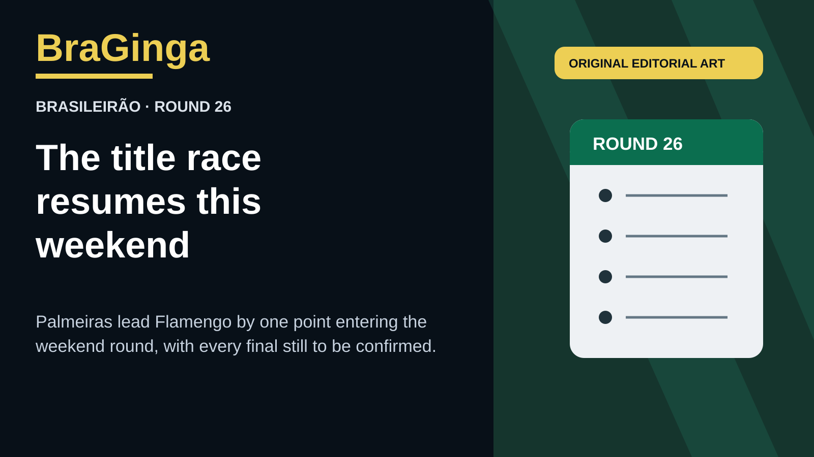

Original BraGinga editorial illustration. No third-party photo assets or club marks.
Palmeiras begin Brasileirão Round 26 on 52 points, one ahead of Flamengo after both clubs reached 25 matches played. Athletico-PR are third on 45, with Fluminense fourth on 42.
The round starts Saturday with Atlético-MG–Coritiba, Vitória–Botafogo and Fluminense–São Paulo. Sunday’s programme includes Palmeiras–Grêmio and Flamengo–Athletico-PR, giving both title contenders a chance to move the race again.
BraGinga will add only completed scores after full-time confirmation. The league table on the front page remains the official current table entering the round.
Sources: CBF Série A table; CBF competition schedule.